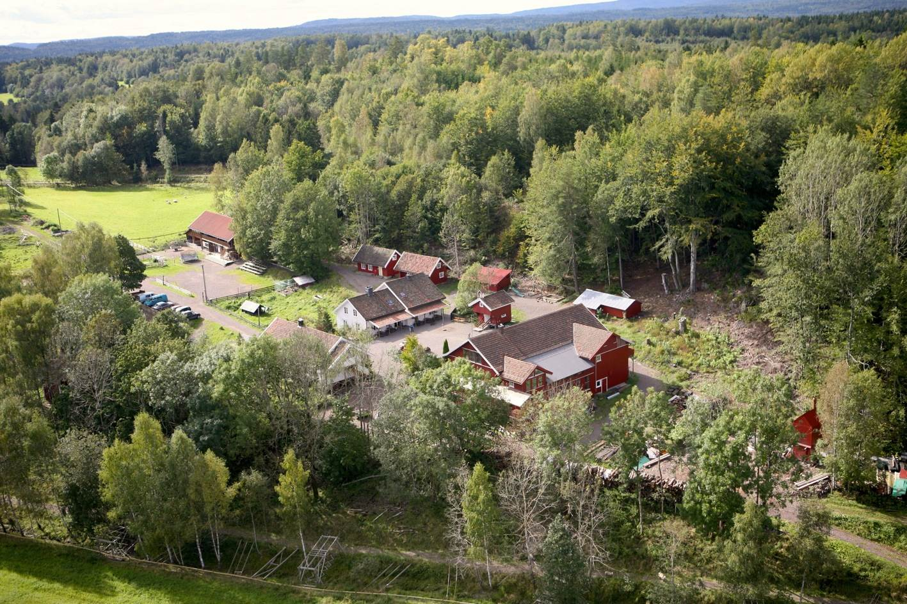

Nyheter:
Hva media skriver om Bondegårdsferie:
"Sandefjord Blad" hadde i mars 2016 et intervju med Ingfrid og Svein om at familier fra hele landet drar på bondegårdsferie til Stokke. Så er det en som blir intervjuet om at folk liker å bo landlig. Og så er det mere om Aarholt-tunet: Klikk her - avisartikkel.
Hva media skriver om Samlivskurs:
"Vestfold Blad" hadde i januar 2012 et intervju med et par som hadde vært på Prep-kurs på Aarholt-tunet. De hadde "lært å krangle på en konstruktiv måte". Avisa intervjuet også Ingfrid og Svein. Se reportasjen. Den tar litt tid å laste ned, skroll nedover til tekst så kommer bildene etter hvert: Klikk her - avisartikkel.
Bondebladet skriver i tosiders oppslag des.12 om Aarholt-tunet Gjestegård som "et sted for utvikling av mennesker" :
Svein Aarholt og Ingfrid Weydahl har utviklet gården til å bli en arena for samlivskurs og andre typer kurs og konferanser, samt leirskole og bondegårdsferie. Alt sammen med mål om å utvikle mennesker. Klikk her - avisartikkel.
Hva media skriver om Bygde-Utviklingsprisen:
"Ingfrid Weydahl og Svein Aarholt fikk i slutten av oktober 2011 tildelt årets Bygdeutviklings-pris for Vestfold av Innovasjon Norge for måten de har utviklet og driver Aarholt-tunet på og de ringvirkninger det skaper i lokalsamfunnet."

Bildet over er fra utdelingen i oktober. I etterkant ble tre av fylkesvinnerne nominert til den nasjonale Bygdeutviklingprisen. Aarholt-tunet var blant tre av 75 kandidater på landsplan nominerte til den nasjonale BU-prisen. Utdelingen fant sted på en presskonferanse ved den norske ambassaden i Berlin i januar-12 i forbindelse med mat-/landbruks- og reiselivssmessen "Grûne Woche". Landbruks- og matminister Lars Peder Brekk delte ut prisen. Han sier bl.a. i talen sin: "Prisen ble innstiftet for å synliggjøre vellykket nærings- og forretningsutvikling i - og i tilknytning til landbruket, og å være en inspirasjonskilde for andre. Spennvidden i tidligere vinnere gjenspeiler den kreativiteten som er i landbruket, her finner vi flotte og vellykkede eksempler på reiseliv, foredling og merkevarebygging av lokalmat, Inn på tunet og treindustri for å nevne noe. Selv om det bare kan kåres en vinner av den nasjonale bygdeutviklingsprisen, vil jeg understreke at dere alle tre er vinnere i å utvikle en bedrift dere med rette kan være stolte av." (Resten av talen til Brekk - om bl.a. Aarholt-tunet:
Klikk her.)
Aarholt-tunet gratulerer prisvinneren Haaheim Gaard i Hordaland. (Se avisutklipp lenger nede på siden.)
Videre står det i begrunnelsen for Vestfold BU-prisen, og dette var grunnlaget for at Aarholt-tunet gikk videre helt til finalen:
"Ekteparet har hele tiden lagt vekt på økologi, fornybarhet, gjenbruk og kortreisthet både på mat, energi og ansattes reiseavstand. De tilbyr i dag et spennende og mangfoldig spekter av tjenester på gården sin. Kandidater til Bygdeutviklingsprisen vurderes etter økonomisk resultat, sysselsetting - særlig for kvinner og ungdom, utnytting av lokale ressurser, fortrinn og ringvirkninger i lokalsamfunnet og nyskaping/originalitet.
I tillegg til kriteriene for Bygdeutviklingsprisen har juryen lagt vekt på følgende:
Aarholt-tunets suksess har skapt gode ringvirkninger i lokalsamfunnet. Fra å være en gård hvor ektefellene hadde arbeid utenfor bygda, har de begge skapt arbeidsplasser på gården. Foruten bruk av lokale håndverkere, har Aarholt-tunet skapt deltids arbeidsplasser for 8-10 mennesker. De har nært samarbeid med nabogården om produkter, varer og opplevelser. Eierparet har benyttet gamle bygninger som andre anbefalte å rive og flere av husene er restaurert med materialer fra egen skog. Tømmerhus fra distriktet er tilflyttet stedet og benyttet igjen.
Ekteparet har lagt vekt på økologi, fornybarhet, gjenbruk og kortreisthet (eller "u-reist" som de også kaller det) både på mat, energi og ansattes reiseavstand. Kandidaten har klart å utnytte en relativt liten eiendom der både jord og skog brukes på utradisjonell måte.
I skogen og ved vann har man skapt opplevelser for svært mange barn, ungdom og familier fra hele landet. Opplevelsesverdien fra skogen er langt høyere enn hva man henter ut av tømmerverdier.
Kandiaten har kontinuerlig fornyet og utvidet tilbudet på gården. De har brukt overskuddet av driften til å videreutvikle tilbudet."
{kind=link}
Juryen for årets utdeling i Vestfold har bestått av Elin Røed, styreleder i Innovasjon Norge Buskerud Vestfold og Tore Øystein Stømsodd, direktør for Innovasjon Norge Buskerud Vestfold (de er med på bildet lenger opp på siden). Samt Astrid Aass, landbruksdirektør i Buskerud og Olav Sandlund, landbruksdirektør i Vestfold.
Regjeringen.no sin annonsering av de nasjonale kandidatene til BU-prisen: Klikk her - for "regjeringen.no".
---Regjeringen.no sin omtale av Aarholt-tunets nominasjon til landsfinalen i BU-prisen og Lars Peder Brekk sin tale:
"Landbruks- og matminister Lars Peder Brekk deler ut Den nasjonale Bygdeutviklingsprisen for 2011 i Berlin. Oversikt over tidligere vinnere." Klikk her - for "regjeringen.no".
---"Vestfold Blad" sin omtale av prisutdelingen i Bygdeutviklingsprisen:
Aarholt-tunet gikk videre sammen med to andre bedrifter i Norge blant 75 nominerte - til landsfinalen i Innovasjon Norge sin bygdeutviklingspris. Aarholt-tunet ble hedret på ambassaden i Berlin under "Grûne Woche"" i januar-12. Bilde. Klikk her - avisartikkel.
---Bondebladet.no sin omtale av BU-pris-utdelingen:
"Tre bedrifter kniver om den store BU-prisen" Klikk her - Bondebladets artikkel.
----
{kind=link}